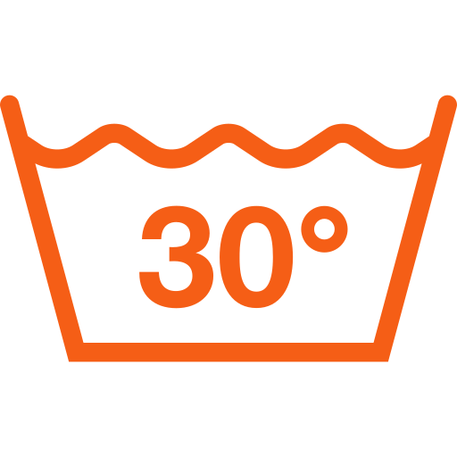
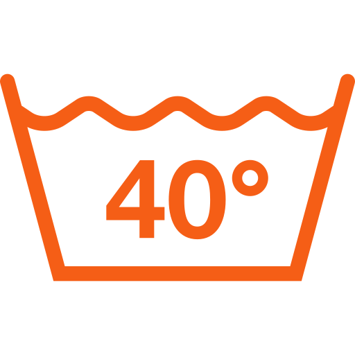
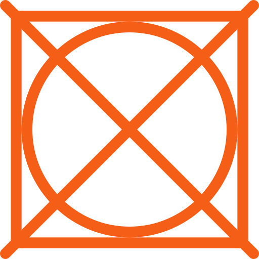

Washing at
-
 Use a gentle wash program for delicates / wool
Use a gentle wash program for delicates / wool
-
Use a mild detergent or wool detergent
-
Turn garment inside out to protect delicate knit details
-
Place the garment in a laundry bag to avoid friction during the wash cycle
-
Select a low spin speed to reduce stretching of the knitwear
-
Wring out gently after washing
Follow the steps as described above for 30 degrees.
However, make sure the garment is machine washable at 40 degrees, as not all hand-knitted
materials tolerate heat well!
Check the instructions on your purchase or reach out to me if you're unsure.
Washing at
Drying
-
Avoid using a tumble dryer! The heat and spinning will damage the knitted material and it may
shrink
-
Hand-knitted garments should preferably be dried flat to maintain their shape and prevent
warping
-
Lay out the washed garment and shape it as desired
-
Let it air dry by spreading it out flat on a clothes rack or towel. Avoid direct sunlight to
prevent discoloration